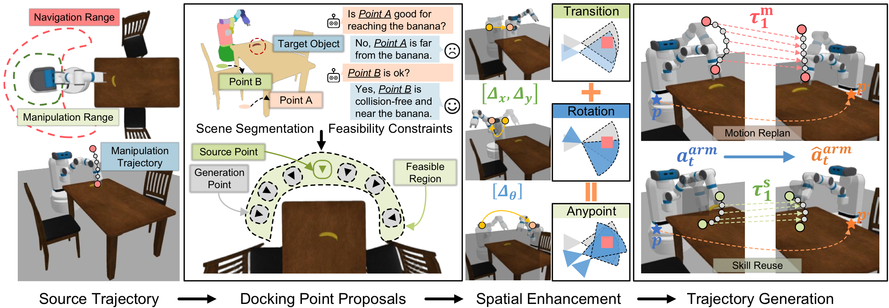
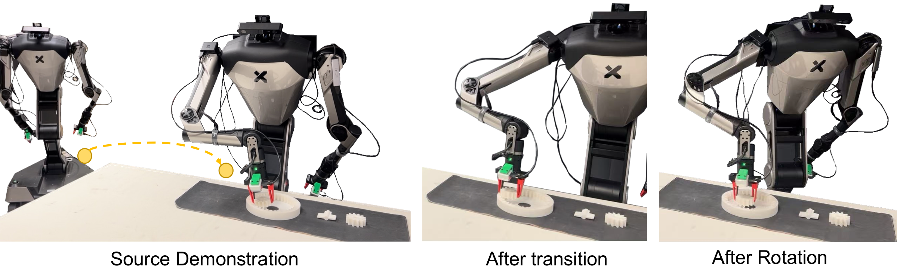

School of Electrical and Electronic Engineering, Nanyang Technological University, Singapore
Zhenyu Wu: Beijing University of Posts and Telecommunications, Beijing, China
Abstract
Mobile manipulators must operate effectively from a continuum of docking positions, yet acquiring enough demonstrations to cover this space is prohibitively expensive. DockAnywhere solves this by reusing a small set of source demonstrations across arbitrary target docking configurations through geometric trajectory transformation—no additional robot time required. Given a source manipulation trajectory and a new docking pose, we decompose the trajectory into motion and skill segments, apply spatial transforms (translation + rotation) derived via TAMP-based feasibility reasoning, and synthesize photorealistic point-cloud observations at the target viewpoint. This lets a single demonstration seed an augmented dataset spanning the full reachable workspace, achieving state-of-the-art performance on ManiSkill simulation benchmarks and strong transfer to real hardware.
Method
DockAnywhere transforms a source trajectory into target-docking-aware demonstrations through four sequential stages.

Pipeline overview. (1) The source trajectory and scene are segmented into manipulation range and motion range. (2) A VLM scores candidate docking points for feasibility against the target object. (3) Spatial transforms (Δx, Δy, Δθ) align the trajectory to the new docking pose. (4) Motion replanning and skill reuse generate the final augmented trajectory with synthesized point-cloud observations.
Results
DockAnywhere is evaluated on four ManiSkill manipulation tasks under 1-demo and 5-demo source settings, and validated on a real Unitree H1 humanoid robot.
Success rate (%) across four tasks: PegInsertionSide (PIS), StackCube (SC), AssemblingKits (AK), PushCube (PC). Higher is better.
| Method | PIS | SC | AK | PC | Avg. |
|---|---|---|---|---|---|
| 1 Source Demonstration | |||||
| No Augmentation | 12.0 | 28.0 | 14.0 | 62.0 | 29.0 |
| Spatial Aug. (Translate) | 34.0 | 52.0 | 28.0 | 82.0 | 49.0 |
| Spatial Aug. (Translate + Rotate) | 40.0 | 56.0 | 32.0 | 84.0 | 53.0 |
| DockAnywhere (Ours) | 46.0 | 62.0 | 40.0 | 86.0 | 58.6 |
| 5 Source Demonstrations | |||||
| No Augmentation | 26.0 | 52.0 | 24.0 | 74.0 | 44.0 |
| Spatial Aug. (Translate) | 52.0 | 68.0 | 48.0 | 86.0 | 63.5 |
| Spatial Aug. (Translate + Rotate) | 54.0 | 66.0 | 50.0 | 84.0 | 63.5 |
| RoboAgent | 48.0 | 64.0 | 44.0 | 88.0 | 61.0 |
| MimicGen | 50.0 | 70.0 | 46.0 | 88.0 | 63.5 |
| RoboTwin | 52.0 | 68.0 | 50.0 | 82.0 | 63.0 |
| AnyDoor | 50.0 | 72.0 | 48.0 | 84.0 | 63.5 |
| GROOT | 56.0 | 70.0 | 52.0 | 78.0 | 64.0 |
| ReKep+Aug | 54.0 | 72.0 | 50.0 | 80.0 | 64.0 |
| UniSim | 56.0 | 70.0 | 52.0 | 76.0 | 63.5 |
| DockerSim | 58.0 | 74.0 | 54.0 | 80.0 | 66.5 |
| DockAnywhere (Ours) | 76.0 | 86.0 | 70.0 | 84.0 | 78.9 |

Real-robot transfer on Unitree H1. Given a source demonstration (left), DockAnywhere automatically computes the spatial transform for a new docking position (center) and applies rotation augmentation (right). The policy trained on augmented data successfully executes the gear assembly task from unseen docking configurations without additional human demonstrations.
Citation
If you find DockAnywhere useful in your research, please cite our paper.
@article{shan2026dockanywhere,
title = {DockAnywhere: Data Augmentation for Mobile Manipulation},
author = {Shan, Ziyu and Zhou, Yuheng and Wu, Gaoyuan and Ji, Ziheng
and Wu, Zhenyu and Wang, Ziwei},
journal = {IEEE Robotics and Automation Letters},
year = {2026}
}